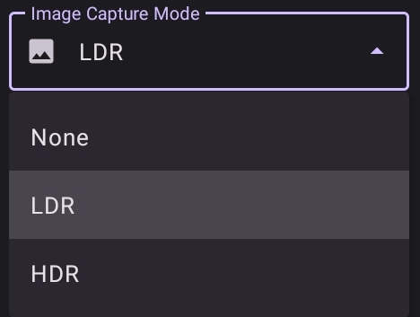
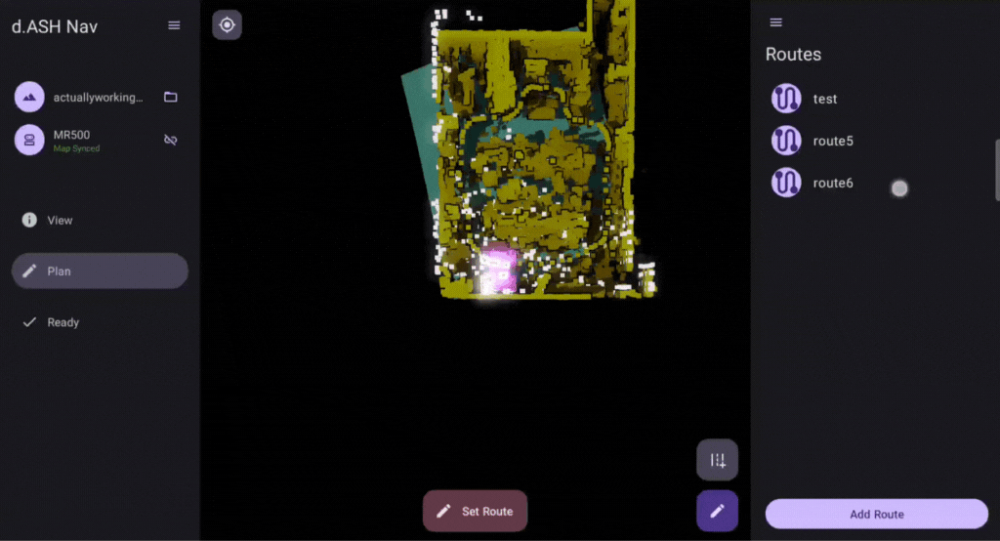

d.ASH Nav
Introduction
|  { align=center style="width:400px"} |
{ align=center style="width:400px"} |
Welcome to the d.ASH Nav application user guide! Whether you're using a mobile device or computer desktop for robot operations, we've got you covered. For mobile device guide, refer to section 2 in this page. For desktop usage, please turn to section 3.
Now, let's delve into the functionalities that d.ASH Nav offers for seamless robot operations and the respective steps for each of them!
Table of Contents
-
Application Functionalities
-
d.ASH Nav for Mobile
- 2.1 Setting up
- 2.2 Installation guide
- 2.3 Your account
- 2.4 Offline mode
- Welcome to d.ASH Nav!
- 3.1 Setting up your robot
- 3.2 Loading in your map file
- View Tab
- 4.1 Adjusting map view
- 4.1.1 Clipping
- 4.1.2 Contour
- 4.2 Good map visualizations
- Ready Tab
- 5.1 Live camera streaming
- 5.2 Manually controlling your robot
- 5.3 Localizing your robot
- Plan Tab
- 6.1 Creating your route
- 6.1.1 Initializing your BLK scanning configuration
- 6.1.2 Setting route via waypoint
- 6.1.3 Setting route via manual control
- 6.1.4 BLK scanning
- 6.2 Editing and deleting your routes
- 6.3 Running your routes
1. Application Functionalities
d.ASH Nav is the platform for autonomous control of robots. Being seamlessly integrated in the d.ASH Fleet Management workflow, you can enjoy easy planning and deployment of your robots for various use cases. d.ASH Nav allows you to plot waypoints for autonomous navigation on maps, tracking and monitoring path planning, as well as overall monitoring of your robots.
Because d.ASH Nav is fully integrated with d.ASH Fleet Management system, an internet connection is required. Should you require d.ASH Nav without an internet connection, please contact us for more details.
Pilot
Our Pilot framework offers high-performance, low-latency, long-range remote operations. It allows you to take manual control of your robots at any time, from any distance, and in any environment.
Live Video Streaming
Our ultra-high-speed data streaming enables Pilot to stream live video feeds from robots, facilitating operation in environments with weak network infrastructure. Stay connected with minimal latency, you can take control across the country with d.ASH Nav.
Waypoint Autonomy
d.ASH Nav determines the real-time location of connected robots within millimetres. Just drop and add waypoints like markings on a map to automated patrol routes all thanks to d.ASH Nav’s seamless UI.
Enhanced Safety and Risk Mitigation
The software’s intelligent decision-making capabilities enable robots to make informed choices to avoid obstacles and optimize their routes, mitigating potential risks and enhancing overall safety. This not only protects the robots themselves but also minimizes the risk of accidents or collisions with humans and other objects in the environment.
2. d.ASH Nav for Mobile
This user guide will cover every function in d.ASH Nav Mobile, as well as detailed explanations and necessary steps to take, for operating your robots through your mobile device.
2.1 Setting up
This is where you can find the necessary steps to install the application and get started with it.
2.2 Installation guide
Minimum system requirements
Android Tablet with support for OpenGL ES 3.2
Android Version 12 | Snow Cone | API Level 31
Recommended system requirements
Android Version 13 | Tiramisu | API Level 33
To find a list of compatible Android devices, click here.
2.3 Your account

Login to d.ASH Nav with your given credentials. If you encounter any difficulties logging in, please contact us here.
2.3.1 Offline mode
I have no idea what this does
3. Welcome to d.ASH Nav!
After signing into your account, you'll be directed to the main page where you need to load your robot and map files.
|  { align=center style="width:1000px"} |
{ align=center style="width:1000px"} |
3.1 Setting up your robot
| Instructions |
|---|
1 Turn ON your robot |
2 Connect to the robot's WiFi network |
3 Return to the application. On the left hand side, click on this button to select your robot.  |
4 Select the robot that you intend to use. |
3.2 Loading in your map file
| Instructions |
|---|
1 Ensure that you have your map file. |
2 On the left hand side, click on this button to select your map.  |
3 Select the map that you intend to use.  |
Your robot and map has now been imported!

Select the menu icon on the top right hand corner to open up the options menu.

Now, we will move onto the view, plan and ready tabs where all your robot operations are found.

4. View Tab
In this view tab, you will find options to change the view and configurations of the map imported into the application.
4.1 Adjusting the map view
Pinch to zoom in or zoom out
Swipe with one finger to adjust view angle
Swipe with two fingers to move around
Select this button on the top left corner to reset view to default.

4.1.1 Clipping
Move the points on the range slider to adjust how much floor/ceiling is shown on the map of your application.

4.1.2 Contours
Toggle on and off or adjust the contour level to change the amount of detail in data points.

4.1.3 Example of a good map visualization
The view tab is entirely used to change the way you see the map on the application and it is up to you on how you want to configure it. Leaving it as default is alright as well. But usually, you should adjust the thumbs such that the floor of the map is visible and the ceiling of the map is hidden but the artifects are still visible.
5. Ready Tab
Inside this tab is where you find the functions to control your
5.1 Live video streaming
To see your robot's camera view, select or toggle the camera options here. This can be found in the options menu on the right.

5.2 Manually controlling your robot
| Instructions |
|---|
1 To move your robot, switch the control mode at the bottom of the application to manual mode.  Ensure that you are on the ready tab. |
2 Use the joysticks to move the robot.  The joystick on the left is used to move the robot front and backwards, while the right joystick is used to turn the robot left and right. |
5.3 Localizing your robot
Before we move on to the functionalities in the planning and ready tabs, we will need to localize our robot.
Localizing would ensure that our robot knows its exact location in real life and a good localization would ensure that we know where our robot is without actually looking at it in real life.
| Instructions |
|---|
1 On the right side of the application, press the Localize button.  Ensure that you are on the ready tab. Here, you can also find your robot status and see information like the battery, localization and stance. |
2 Localize the robot based on its actual position in real life from the map.  Alternatively, you can use the rotation button to adjust and improve your localizations. Alternatively, you can use the rotation button to adjust and improve your localizations.  |
Some good robot localization examples are shown below.

From the comparison above, the robot's LIDAR visualization (white points) is aligned well to the map hence it has good localization. On the other hand, the LIDAR visualization on the right localization does not align with the map. Adjust your robot's position such that the LIDAR visualization aligns well with your map imported.
6. Plan Tab
The planning tab is for preparing routes for robot autonomy.
6.1 Creating your route
Before starting, ensure that you have our localized your robot to the map. Refer to Section 4.2.3 for a guide on robot localization.
At the bottom right corner of your screen, select on the 'App Route' button.

Give your new route a name. Try to use a name that is descriptive and well labelled.

You will then be directed to the route edit view. Here you will be able to add and remove waypoints, change the configurations of BLK scanning, and generate scanning points around the map.

6.1.1 Initialize your BLK scanning configurations
Lidar Scan Quality

Low : LIDAR spins at the slowest rate, which makes the resulting scan the least detailed.
Medium : LIDAR spins at a faster rate, which makes the resulting scan more detailed.
High : LIDAR spins at its fastest rate, which makes the resulting scan the most detailed.
Image Capture Mode

None : Does not utilize the camera for capturing images.
LDR (Low Dynamic Range) : Details in shadows may be lost or details in highlights may be blown out.
HDR (High Dynamic Range) : More detail in both highlights and shadows can be captured.
6.1.2 Setting route by waypoints

To set your route, you can do it by manually making waypoints for the robot to follow. To do this, select the Add Mode button at the bottom of the screen.


If you want to delete a waypoint, select the Remove Mode button, and click on the waypoints that you would like to delete.

Finally, select the Done button when you are finished with setting your route.
6.1.3 Setting route by controlling your robot
Add a new route and give it a name. Once you've created a new route, exit by pressing the done button.
On the bottom right of your map navigation screen, click on this button.

You will now have to manually control your robot around the map to create the path. Use the joysticks and 'Add Point' buttons to make your route.

After moving your robot, you should see a blue-coloured path being formed by the robot. This path is the route you will set for your robots to follow.
Once you are finished with setting your route, press 'Save Recorded Route' at the bottom of the screen.
6.1.4 BLK Scanning
Auto generation of scan points
This is where you can generate the points in your route for a BLK scan based on the robot's distance traveled.
To do so, turn this option on before making your route via manual control and set a distance interval. If your set distance interval is two metres, the robot will run a BLK scan every two metres travelled.

Manually setting scan points
6.2 Editing or deleting your routes
On the right hand side, there will be a list of your routes created. You can edit or delete these routes by tapping and holding on the route and the rename, copy and delete buttons will show up at the bottom.

6.3 Running your routes
| Instructions |
|---|
1 Select the route that you would like to run. |
2 Once select, press the Set Route button located at the bottom of the screen.  |
3 Switch to the ready tab. |
4 Switch control mode to auto.  |
4 Your robot will now run and follow the route that you've created. |
Enjoy using d.ASH Nav! If you require any support, please feel free to contact us here.